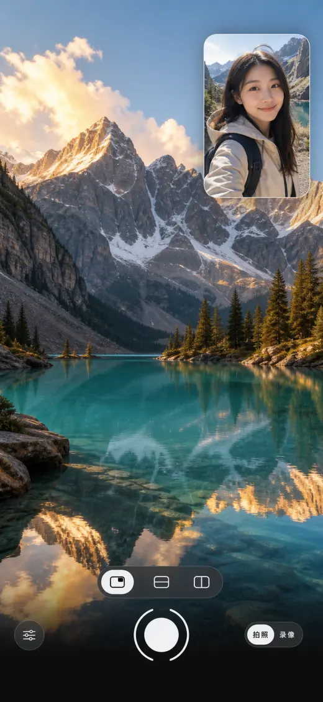

Dual-camera capture · iPhone
TwoPic records the scene and your reaction together
Use the front and back iPhone cameras at the same time, then save one photo or video to your library. Switch between picture-in-picture, top-and-bottom and left-and-right layouts while framing.
Real product screen
Inside the app

Capture
Three layouts, one moment
Both camera feeds stay live. In picture-in-picture mode, tap the small window to switch which camera fills the frame.
Shoot either format and save the result directly to the system Photos library.
Choose supported camera pairs, recording quality and microphone direction for your device.
Simultaneous capture requires an A12-class iPhone XS or newer and iOS 18.0 or later. The app reports unsupported hardware on launch.
Before you buy
Check the interface language and price
The current app interface is Simplified Chinese, even though this product description is in English. The US App Store listed an upfront $1.99 price on 23 September 2026; prices vary by region.
The App Store listing says TwoPic has no network access and the developer does not collect data; captures stay in your Photos library.
TwoPic captures both perspectives at once. The page does not promise automatic post-production or cloud syncing.
Common questions
Before you download
Does TwoPic require a newer iPhone?
Yes. Simultaneous front and back camera capture requires an iPhone XS or later with an A12-class chip and iOS 18.0 or later.
Is the TwoPic app interface available in English?
Not in the current version checked on 23 September 2026. Its interface is in Simplified Chinese, although the App Store description is translated.